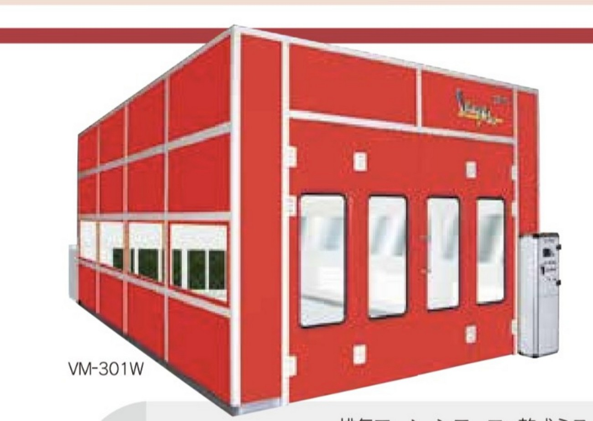

A new digital sales system for KURITA MAX in ASEAN — not a translation of an existing Japanese website.Một hệ thống bán hàng số mới cho KURITA MAX tại ASEAN — không phải bản dịch của website tiếng Nhật hiện có.
株式会社栗田工業 is a Japanese manufacturer with deep experience in the automotive body & paint repair industry. Its KURITA MAX SERIES paint booths are in daily use at car dealers and professional repair shops across Japan, built on integrated engineering across airflow, heat, safety and workability. 株式会社栗田工業 là nhà sản xuất Nhật Bản có kinh nghiệm sâu rộng trong ngành sửa chữa thân vỏ & sơn ô tô. Dòng Paint Booth KURITA MAX SERIES được sử dụng hàng ngày tại các đại lý xe và xưởng sửa chữa chuyên nghiệp trên khắp Nhật Bản, dựa trên nền tảng kỹ thuật tích hợp về luồng khí, nhiệt, an toàn và khả năng thao tác.

CoatureVietnam operates the Vietnam market entry point for KURITA BOOTH GLOBAL — running Digital Marketing, Site Surveys and the local sales flow, then connecting each real project back to 株式会社栗田工業's Japanese engineering team for technical review and proposal. CoatureVietnam vận hành cửa vào thị trường Vietnam cho KURITA BOOTH GLOBAL — phụ trách Digital Marketing, Site Survey và luồng bán hàng tại địa phương, sau đó kết nối từng dự án thực tế với đội ngũ kỹ thuật Nhật Bản của 株式会社栗田工業 để rà soát kỹ thuật và đề xuất giải pháp.
“We are not translating a Japanese website.
We are building a new ASEAN sales system for KURITA MAX.”
Existing Japanese catalogs are the raw material. This website is the finished product — restructured around Why KURITA MAX?, Which KURITA MAX?, Engineering and Site Survey — built specifically for how ASEAN customers discover, evaluate and buy a paint booth. Các catalog tiếng Nhật hiện có là nguyên liệu. Website này là sản phẩm hoàn chỉnh — được tái cấu trúc xoay quanh Why KURITA MAX?, Which KURITA MAX?, Engineering và Site Survey — được xây dựng riêng cho cách khách hàng ASEAN tìm hiểu, đánh giá và mua một Paint Booth.
Phase 1 builds one winning model in Vietnam — Site Survey to Order. That model is then extended market by market. Phase 1 xây dựng một "mô hình thành công" tại Vietnam — từ Site Survey đến Order. Mô hình đó sau đó sẽ được mở rộng theo từng thị trường.
Phase 1 — LivePhase 1 — Đang triển khai
Phase 2Phase 2
Phase 2Phase 2
Phase 2Phase 2
Country versions are not simple translations — power supply, heat source, climate, regulations, fire safety, local construction capability and contact points are localized for each market. Các phiên bản theo từng quốc gia không đơn thuần là bản dịch — nguồn điện, nguồn nhiệt, khí hậu, quy định, phòng cháy, năng lực thi công địa phương và đầu mối liên hệ sẽ được bản địa hóa cho từng thị trường.